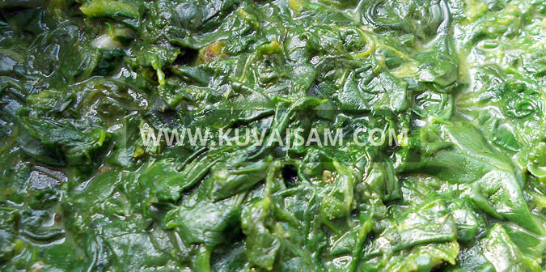

Sastojci
pasulj po izboru
suva rebra (svinjska, juneća,..)
slanina barena, dimljena - domaća
kobasica kranjska, sremska - domaća
2 glavice crnog luka
1 čen belog luka
1 kom šargarepa
po 1 kom zeleni i celera
1/2 kom sveža ili zamrznuta paprika

Sastojci
½ kg očišćenog spanaća2 čena belog luka3 kašike ulja1 kašika brašna½ šolje mleka1 kašičica majorana1 kašičica soli
Priprema
Operite spanać u više voda i barite ga bez dodavanja vode (10-ak minuta).
Isecite obaren spanać na sitno. U šerpu stavite ulje, brašno, začine i narendan beli luk, zatim dodajte isečen spanać i na kraju mleko.
Kuvajte još na srednjoj vatri (2/3), 5 do 10 minuta.